圖解 13｜三分之二選手沒等醫生批准就回場
完整研究：13_補充_影片回饋_教練溝通_精英嚴重傷病 · 回到 首頁
📌 重點摘要卡
- 一句話核心： 精英選手最大的缺口不是受傷本身，而是復出管理。
- 關鍵數據： 嚴重傷 57.9%｜下肢 78.2%｜未經醫生批准復出 66.7%｜再傷 52.9%｜髕腱病變 18 例最多
- 因果流程：
未經批准提早復出➔組織未完全適應➔同部位再傷（推論；問卷研究不能證明因果） - 跨域應用： 羽球訓練：建立復出三階段檢核表。數據模型：存活分析概念，追蹤再傷時間。IT 教學：設計球隊傷病紀錄資料表與查詢。
❓ 先猜一猜
韓國大學與職業隊 126 名精英選手中，有多少人首次復出前沒有醫生批准？ 答案：66.7%。而且 52.9% 曾經再傷。
🎬 動畫：嚴重傷的樣貌

📊 數據一覽
| 指標 | 數值 |
|---|---|
| 曾有嚴重傷（停訓 ≥28 日） | 57.9%（單打 54.7%、雙打 61.3%） |
| 下肢／過度使用／訓練中發生 | 78.2%／64.4%／70.1% |
| 最常聯想的動作 | 弓步 32.2% |
| 單打主導側受傷機會 vs 雙打 | OR 3.11（95% CI 1.21–7.95） |
| 需要做手術 | 11.5% |
| 復出時間最常見 | 4 週至未滿 2 個月（43.7%）；31.0% 需 ≥3 個月 |
🧭 復出不是一天的事
flowchart LR
A["受傷"] --> B["醫療評估<br/>醫生批准"] --> C["回到參與<br/>部分訓練"] --> D["回到運動<br/>完整訓練"] --> E["回到表現<br/>比賽水準"]三個階段的概念來自 2016 年重返運動共識（Bern consensus）。每一階段都要有通過標準，而不是「不痛就上場」。
🧠 延伸知識
📝 甚麼叫「嚴重傷」？
運動流行病學常用停訓天數分級：超過 28 天屬嚴重。這比「痛不痛」更客觀，也方便跨研究比較。
📝 單打、雙打擔心的事不一樣
單打較多擔心再受傷（61.4% vs 37.2%），雙打較多擔心表現下降（51.2% vs 38.6%）。復出時的心理支持要因人而異。
💡 教練可以做的三件事
- 定一條規則：首次復出前要有醫生或物理治療師批准。
- 髕腱、小腿、跟腱是重點：把離心與跳躍負荷放進預防（見 圖解 05）。
- 記錄每次傷病與復出日期，才知道球隊的再傷率。
⚠️ 判讀界線
回顧性問卷：靠選手回憶，可能有偏差；樣本是韓國精英選手，不一定適用於青少年。
✅ 30 秒自我測驗
❓ 1. 五大嚴重傷診斷中，哪一項最多？
髕腱病變（18 例）。
❓ 2. 重返運動的三個階段是甚麼？
回到參與 → 回到運動 → 回到表現。
❓ 3. 這項研究最大的管理缺口是甚麼？
66.7% 首次復出前沒有醫生批准，52.9% 有再傷史。